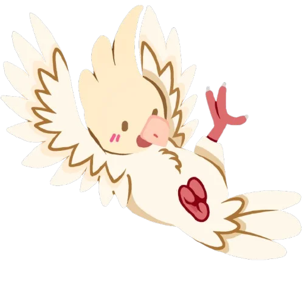
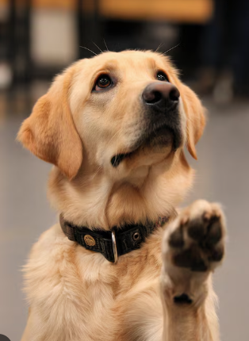
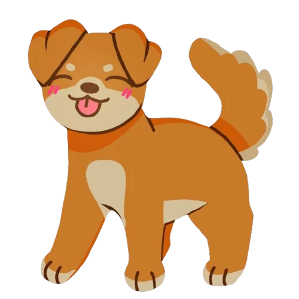
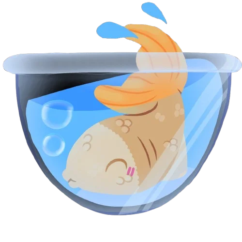
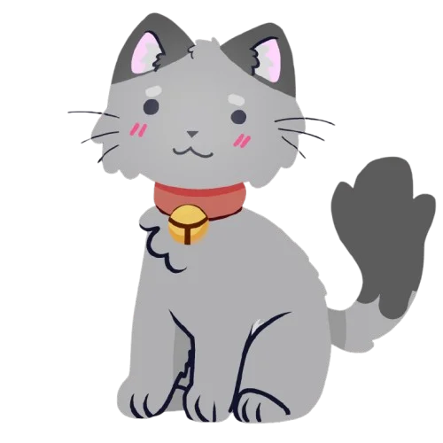
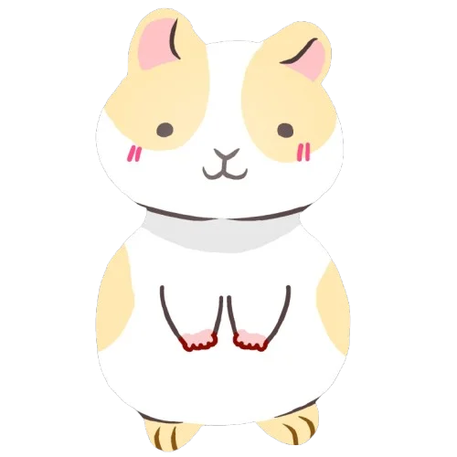

Perfil do pet
Um espaço para o tutor apresentar seus animais e se conectar com outras pessoas.
Um projeto que aproxima quem cuida de quem atende: tutores encontram serviços e informações, e empresas do universo pet ficam mais perto de quem procura por elas.

01 · Nosso objetivo



O mercado pet é cheio de possibilidades: serviços, estabelecimentos, informações. Mas, para o tutor, tudo isso costuma estar espalhado e difícil de comparar.
A Nuppy nasce para juntar essas possibilidades em uma experiência mais integrada.
Busca simples por serviços e informações relevantes para quem cuida.
Tutores e negócios em um mesmo ambiente, crescendo passo a passo.
Dicas e referências sobre cuidado animal ficam em lugares diferentes, difíceis de reunir.
Descobrir quem oferece o quê, e onde, ainda exige muita busca.
Empresas pet nem sempre conseguem ser encontradas por quem mais precisa delas.


02 · O ecossistema
O projeto reúne frentes que se complementam. Todas estão em desenvolvimento e vão chegar de forma gradual.
Um espaço para o tutor apresentar seus animais e se conectar com outras pessoas.
Grupos para trocar experiências, dúvidas e informações sobre o cuidado com os animais.
Estabelecimentos e serviços do universo pet reunidos em um mapa, para facilitar a descoberta perto de você.
Empresas podem pedir para participar.
04 · Parcerias comerciais
Ser descoberto é o primeiro desafio de qualquer negócio. A Nuppy propõe aproximar empresas pet de tutores interessados, com presença na plataforma e em recursos como o mapa. Explore quem pode participar:
As categorias acima ainda serão confirmadas. Valores e condições comerciais ainda não foram definidos e serão informados no contato. Enviar o formulário é uma manifestação de interesse.
05 · Dúvidas
O projeto está em desenvolvimento. As frentes mostradas aqui chegam de forma gradual.
Não. O envio é uma manifestação de interesse e cada solicitação passa por análise da equipe.
Os valores e condições comerciais ainda serão definidos. Nada é cobrado ao enviar o formulário.
Pedimos só o necessário para avaliar a solicitação e usamos as informações apenas para esse fim.
06 · Parceria
Conte sobre o seu negócio. As informações chegam à equipe responsável, que analisa a solicitação antes de qualquer aprovação. Coletamos apenas o necessário e os campos com asterisco são obrigatórios.